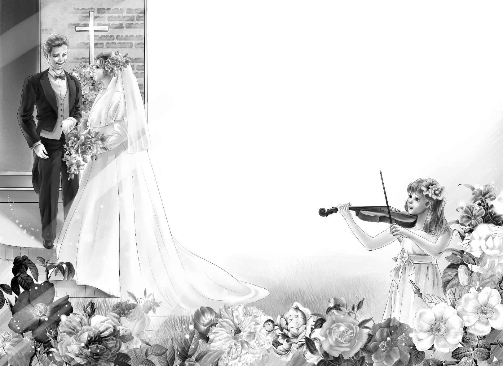

What a day it was for the Alden children when the rocks were all taken away. The floor of the cave was smooth sand， just right for digging. More men came to the island that day， and the digging began.
“Isn’t it funny to see grown-up men digging in the sand，” said Benny.
“Watch them， Benny，” said Alice. “You will see them put things in that big box.”
Sure enough， the men often found broken pieces of a dish， or a smooth stone， and carefully put them in a box. The children never grew tired of watching them. Every day after school they went over to the island to see what the men had found.
Henry could not come until late on some days， for he had to row with the high school crew on the river. He had been Captain of the high school crew for a year. But as soon as he came， he always helped Joe carry the boxes to the boat.
One day the box was so heavy that Henry could not get it to the boat. “I’m sorry， Joe，” he said. “Let’s stop here at the yellow house and sit down for a minute. This is harder work than rowing.”
Joe was glad too， to sit down on the wooden steps of the little yellow house.
Soon Benny was looking in all the windows.“ Let’s go into this house some time，” he said.
“I wonder why we never did， Joe，” said Jessie. “Do you know why Grandfather doesn’t like to talk about it？”
“No，” said Joe. “I never asked him because he seemed so sad about it. I think it has a mystery. Some day Alice and I are going into the house and solve the mystery.”
“Without us？” cried Benny.
“Yes， sir， without anybody！” said Joe.
“You don’t really mean you’d go without us？” Benny asked. He could hardly believe his ears.
“Don’t tease him， Joe，” said Alice suddenly. She put her hand gently on Joe’s arm. “Let’s tell him！ Let’s tell them all！”
“Ho-hum. Maybe you don’t need to tell us. Maybe we can guess，” cried Benny.
“All right. Go ahead and guess，” laughed Joe. He took Alice’s hand and held it.
“You make it too easy，” said Benny. He looked at Henry. “Didn’t I tell you？ I told you a long time ago.”
“It wasn’t true a long time ago，” said Joe.
“Let’s guess，” said Violet， taking Alice’s other hand. “Does the secret have anything to do with music？”
“Yes！” said Joe and Benny together.
“Will everyone wear beautiful clothes？” asked Jessie smiling.
“Yes，” answered Joe and Benny.
“Will there be a cake， and maybe a beautiful ring？” asked Henry.
“Right here！” said Joe. He held up Alice’s hand. On it was a beautiful new ring.
“Funny we didn’t see that，” said Jessie.
“Not so funny， dear，” said Alice. “It went on just this minute.”
“For good，” said Joe.
“Where are you going to live， Alice？” Violet asked suddenly.
“Well， you know Joe has the whole top floor of that big house all to himself，” Alice said. “He says he needs company， so we will live there together.”
“Oh， boy！ Right in the same house with us，just the same as ever！” Benny shouted.
“Does Grandfather know？” asked Henry.
“Well， yes，” said Joe. “We told him yesterday. He said we could have the top floor. After all， it’s his house.”
“Will the wedding be in our house too？” asked Jessie.
“Yes. We want Violet to play the wedding music on her violin， and we want Watch to wear a big white ribbon and come to the wedding too.”
“He won’t like the ribbon，” said Benny. “But he won’t bark if Jessie tells him not to. When is the wedding going to be？”
“As soon as you get out of school，” answered Joe. “Then， you children won’t be busy. And Alice and I will have done a lot of work in the cave.”
“I can’t wait till school is out，” said Benny.
“I guess you’ll have to，” laughed Joe.
What a wedding the Alden wedding was！ Everyone talked about it afterward for days. Alice was very lovely in her beautiful white dress. Violet played for the wedding on her violin， with three other players. She wore a long violet dress. Jessie wore blue.

Watch wore his big white ribbon， and he did not bark until it was all over. When everyone was out on the porch saying good-bye to Joe and Alice， he barked and barked. By then it didn’t matter， for everyone was laughing and talking.
The children did not know what to do with themselves right after Joe and Alice had gone. They tried to read. When it was almost time for supper， Jessie said， “I wonder where they are going on their wedding trip.”
“I don’t know myself，” said her grandfather.“ People don’t tell where they are going.”
“They will be back in two weeks，” said Violet. “Let’s go upstairs again and look at their lovely home.”
Even Mr. Alden went up with the children. Watch came along too. He was always happy when he was with his four children.
Mr. Alden sat down in a big easy chair while Violet and Jessie looked again at the pretty blue and white kitchen. They went into the sunny bedroom， and back to the pleasant living room.
The new dishes were set in piles in the clean cupboards. “It will be such fun for them to keep house here，” cried Jessie. “Everything is in such good order. Alice will love it.”
“Won’t we have a wonderful time this summer，” said Benny. “When Joe comes back he is sure to have some fine ideas.”
“Maybe they won’t want us around， though，”said Jessie. “We must be careful about that.”
“Well then，” said Benny， “we can think up the ideas， and ask them to do things with us.”
“A very good plan， my boy，” said Mr. Alden with a smile. “If they don’t want to， they can always say no.”
Then they heard a step on the stairs. It was Mrs. McGregor， the housekeeper. She was a kind little lady， and took fine care of the children. Her hair was white and her eyes were blue.
“Supper is ready，” she said with a smile.
“I hope I can have some more wedding cake，”said Benny. “I just love weddings， don’t you， Mrs. McGregor？” He took her hand.
“Yes， my dear，” said Mrs. McGregor， smiling at the little boy. “Your cousin Joe has a fine wife， and he is a fine young man himself. It was a lovely wedding.”
Then Violet thought， as she had often thought before， that there was something sad about Mrs. McGregor. “Yes，” she said to herself， “she is sad even when she smiles.”